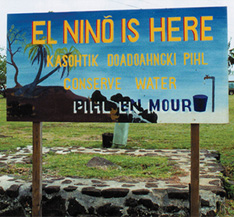

PaCIS and the concept of a Pacific Regional Climate Center trace their roots back to the 1997-1998 El Niño season and initial discussions of Pacific climate services at a workshop held in conjunction with the 1999 Secretariat of the Pacific Regional Environment Program’s (SPREP) meeting of the Pacific Regional Meteorological Services Directors (RMSD). Between 1999 and 2004 a period of dialog ensued and many climate-related programs, systems, and organizations started activities in the Pacific or became more focused on climate-related issues. This period culminated with the Pacific ENSO Applications Climate (PEAC) Center First Decade Review workshop, held in June 2004 at the East-West Center in Honolulu, Hawaii, at which discussions among partners and users of PEAC resulted in the realization of a shared goal of a Pacific climate risk management information system. Eventually this led to the formulation of a PaCIS Steering Committee. The PaCIS Action Plan was completed by this group in February 2008. A meeting of the PaCIS Steering Committee and three working groups was held in Honolulu in August 2008. At this meeting there were lengthy discussions about actions needed to improve climate services in the Pacific. Ad-hoc discussions among members of these groups continued after meeting. This led to a gathering of 22 Steering Committee and working group members for an Implementation Plan Workshop in August 2010 and a meeting of the PaCIS Steering Committee and partners in March 2011, both held at the East-West Center in Honolulu. The outcomes of these meetings represent a synthesis of regional information needs from a variety of sources that has culminated in the formulation of a PaCIS Plan for Regional Climate Services.